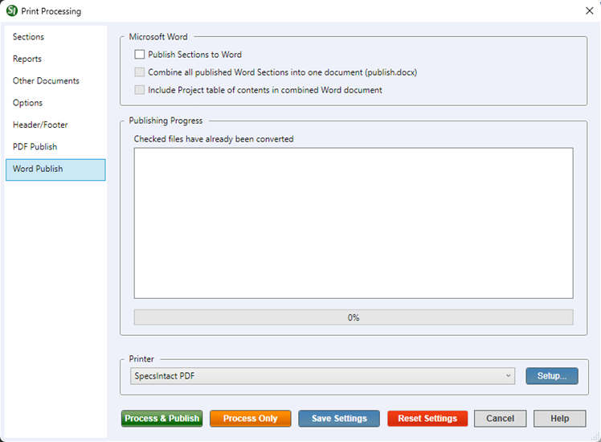

This command can also be executed from the SpecsIntact Explorer's Toolbar, Right-click menu, or by using the keyboard shortcut Ctrl+P.
The Word Publish tab provides a convenient way to generate Microsoft Word versions of your SpecsIntact Sections. This is a one-way conversion for external use, so you cannot import the edits made in Word back into SpecsIntact. The Word files are typically used for internal collaboration, but can also be included if mandated by contract. It provides the flexibility to either create individual Word documents for each file you've selected or to combine multiple documents into a single (publish.docx) file. This allows you to customize your Word output precisely to your needs, whether you require separate files for granular review or a consolidated document for a complete project deliverable. Keep in mind that any previously generated files with the same name will be overwritten when this function is used. To avoid overwriting previously published Word files, use Windows File ExplorerThe Windows Explorer is Microsoft Windows file manager application that is included in the operating system. It provides a graphical interface and allows users to manage files, folders, and network connections, as well as search for files and related components to copy or move them to an alternate location.
The Word Files folder is a system folder that cannot be deleted, but the files within the folder can be.
 To publish to Word, you'll need to select the SpecsIntact PDF printer.
To publish to Word, you'll need to select the SpecsIntact PDF printer.
 The available and default print processing options in SpecsIntact differ between Jobs and Masters, reflecting their distinct purposes and requirements.
The available and default print processing options in SpecsIntact differ between Jobs and Masters, reflecting their distinct purposes and requirements.
When the publishing process begins, SpecsIntact will first perform Address ReconciliationThis process should be used in conjunction with Reference Reconciliation. It changes the Job's Sources for Reference Publications Section, making it unique to the Job by listing only the Sponsoring Organizations for References cited throughout the job. These changes appear in the output versions of the Section (.prn, .doc. and .pdf), not in the original .sec file, Reference Reconciliation,This process makes changes within the Reference Article of each Section so that it lists only those References that are actually cited in that Section's text. These changes appear in the output versions of the Sections (.prn, .doc and .pdf) not in the original .sec files and Submittal ReconciliationThis process changes the Job's Submittal Procedures Section, making it unique to the Job by listing only the Submittal Descriptions actually used throughout the Job. These changes appear in the output versions of the Section (.prn, .doc and .pdf) not in the original .sec file to produce the Processed (.prn) files. Any previous file of this name will be overwritten when this function is used.
 Click the tabbed commands on the image below to see how to use each function.
Click the tabbed commands on the image below to see how to use each function.

- Publish Sections to Word - Provides the option to enable the conversion to Word functionality to produce Word documents, which must be enabled. SpecsIntact converts the Section (.sec) files to PDF, then uses Microsoft Word to convert and save the files into Word documents. This is a faster and more secure way to Publish to Word by replicating the original content while eliminating macro restrictions.
- Combine all published Word Sections into one document (publish.docx) - Provides the option to create a single Word document from the selected Job, Master, or Section(s). To enable this feature, you must first select the Project Table of ContentsA Table of Contents can be prepared for the entire job. The Project Table of Contents lists all the sections included in the job (with or without scope) on the Reports tab.
- Include Project table of contents in combined PDF document - Provides the option to include the Project Table of Contents in the combined PDF document (publish.docx).
- Publishing Progress - Displays the Sections that are being converted to Word. During the Conversion process, a checkmark will be placed next to the Sections that have been converted. Once the conversion process is complete, you will be returned to the Word Files folder.
Process and Print/Publish common controls
The common controls for Process and Print/Publish appear consistently across all tabs, providing a unified experience.

- Printer - Provides the option to select a different printer while displaying the printer details. The last selected printer becomes the application's default printer.
- Setup button - Opens the Print Setup window, making it simple to choose your preferred printer, define the paper Size, Source, and Orientation, and even access networked printers. The Properties button allows you to change options based on the selected printer, such as the number of copies to be printed and to enable duplex or color printing, etc.
- Process & Publish / Process & Print button - Processes the Sections and applies the selections made on each tab, then sends a copy to the selected printer (e.g., hard copy or PDF).
- Process Only button - Processes the Sections, applies your selections, and saves the results to the project's Processed Files folder for your review.
- Save Settings button - Saves selections made on each tab, except for Sections chosen for processing and printing. The next time the Print Processing window is opened, the saved selections will automatically be the new defaults (e.g., Reports, Options, Header/Footer, etc.). When saving settings that are used frequently, make those specific selections first, click the Save Settings button, and then make the additional selections you need but do not want to save as permanent defaults.
- Reset Settings button - Restores any custom selections on the tabs back to the default settings.
Standard Windows Commands
 The Cancel button will close the window without recording any selections or changes entered.
The Cancel button will close the window without recording any selections or changes entered.
 The Help button will open the Help Topic for this window.
The Help button will open the Help Topic for this window.
How To Use This Feature
to Publish to Word:
- In the SpecsIntact Explorer, select a Job or Master, then perform one of the following:
- Right-click and select Process and Print/Publish
- Click the Print/Publish button on the Toolbar
- Select the File and select Process and Print/Publish
- Use the keyboard shortcut Ctrl+P
- On the Sections tab, select All Sections or Some Sections
- On the Reports tab, below the Project/Master Table of Contents, select Include with scope or Include without scope
- On the Options tab, below Show, select the applicable options
- On the Word Publish tab, select Publish Sections to Word along with any other application options
- In the Printer drop-down list, select SpecsIntact PDF
- Click the Process & Publish button
Additional Learning Tools
 Watch all of the eLearning modules within Chapter 4 - Process and Print/Publish and Chapter 6 - Correcting QA Report Errors and Discrepancies.
Watch all of the eLearning modules within Chapter 4 - Process and Print/Publish and Chapter 6 - Correcting QA Report Errors and Discrepancies.
Users are encouraged to visit the SpecsIntact Website's Support & Help Center for access to all of our User Tools, including Web-Based Help (containing Troubleshooting, Frequently Asked Questions (FAQs), Technical Notes, and Known Problems), eLearning Modules (video tutorials), and printable Guides.